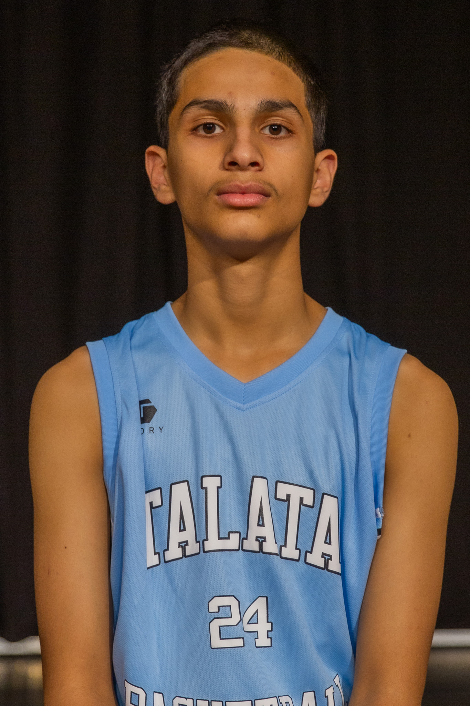
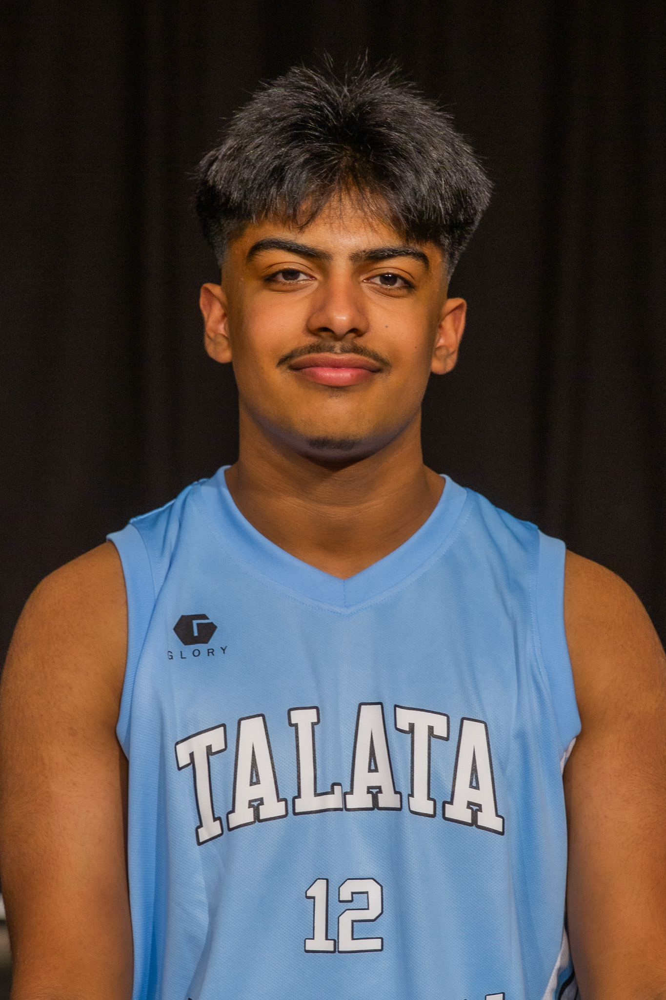
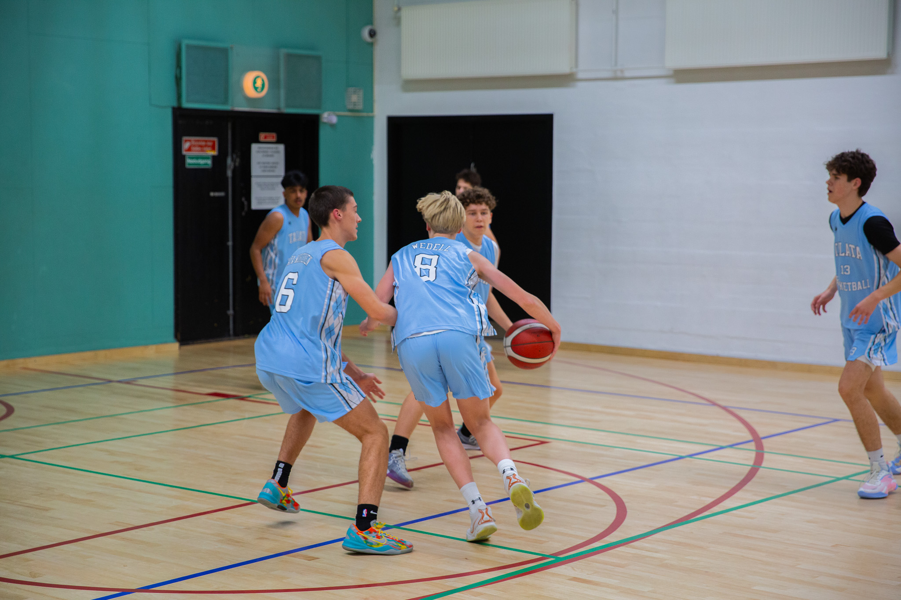
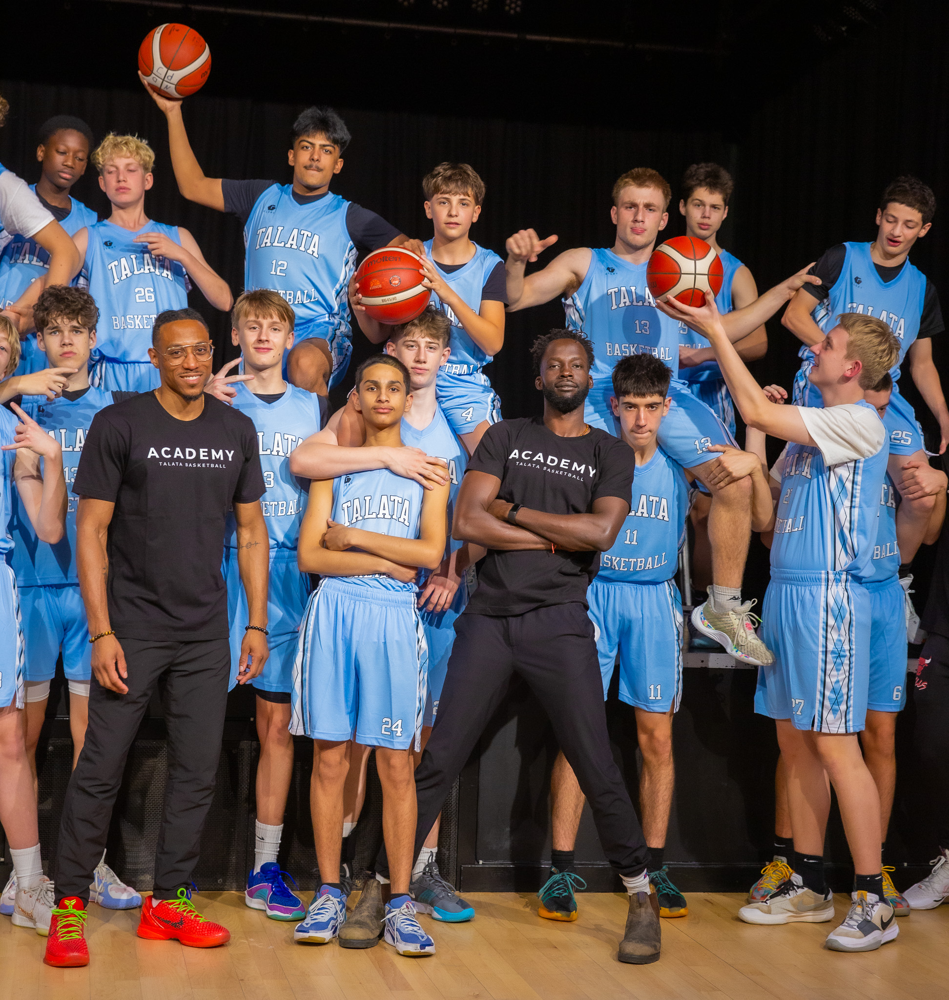

Our Approach
Copenhagen's Constraints-Led Basketball Club
At Talata, basketball is a game of problem-solving, not rehearsed choreography. Players do not get better by standing in lines or repeating the same move fifty times against nobody.
They get better by navigating chaos, reading what is in front of them, and figuring out solutions under real pressure.

How Players Learn
Skill comes from the interaction between the player, the environment, and the task. We do not coach the body. We coach the environment. By changing rules, space, and constraints, we let players find their own solutions and build skills that hold up when it matters.
How We Run Sessions
Our sessions look like messy, hyper-competitive streetball with specific rules. We use repetition without repetition, meaning players solve the same problem again and again but the answer is never exactly the same. No lines. No cone drills.
Our Expectations
From players: embrace the struggle, make mistakes at game speed, communicate. From coaches: be architects of practice, design great games, talk less. From parents: value decision-making and adaptability over picture-perfect form.
01 — Foundation
Demystifying the CLA
Built on ecological dynamics and Karl Newell's model from 1986, and developed further by researchers like Keith Davids, the Constraints-Led Approach rejects the idea that there is one perfect technique. Movement is a solution to a problem, and every player solves it differently.
- →Task Constraints: Rules of the game, equipment size, number of players.
- →Environmental Constraints: Court surface, lighting, crowd noise, defense.
- →Individual Constraints: Height, fatigue, mental state, technical ability.
The 30-Second Parent Pitch
"Instead of teaching your child exactly how to hold their elbow to shoot, we put them in game-like scenarios where scoring requires shooting over a defender. We change the rules of the scrimmage to reward the right behaviors. The game itself becomes the teacher — resulting in players who make faster decisions and whose skills actually work during the chaotic weekend matches, not just during warm-ups."
(Rules, Goals)
(Court, Context)
(Body, Mind)
EMERGES
"We don't coach the body.
We coach the environment."
— The Talata Coaching Staff
02 — Application
Basketball Application & The Vanguard
The basketball world is moving fast, from isolated cone drills toward small-sided games and real decision-making. Here is how the two approaches compare.
Who is teaching this well?
- Alex Sarama: Director of Methodology at the Cleveland Cavaliers. Transforming Basketball. One of the leading voices in CLA for basketball globally.
- Chris Oliver: Basketball Immersion. The guy who brought decision training and zero-second decisions into everyday coaching language.
- Tyler Coston: SAVI Coaching. Brilliant at building constraints that scaffold naturally into game play.
- Brian McCormick: 21st Century Basketball Practice. Pioneered the case against lines and block practice in youth development.
- San Antonio Spurs: The Spurs use team dinners and culture-building as environmental constraints — designed to foster cohesion and collective decision-making. The same principle we use on the court, they apply to the whole organisation.
Handling Traditional "Drill" Areas
Shooting Form: Add variable defense. The body self-organizes the release point to avoid the block.
Ball Handling: Tag games. 1v1 tight space keep-away. No cones.
Finishing: Contact pads. 1v1 advantage/disadvantage starting from the hip.
03 — The Toolkit
Practical Constraints Library
Use these constraints to shape behavior without micromanaging form. Pick the one that makes the skill you want to see feel natural and necessary.
"Coaches must utilize a diverse library of task constraints to nudge players toward desired behaviors without using excessive instruction."
A. Decision-Making Speed
- 0.5 Second Rule: Must shoot, pass, or drive within 0.5s of catching.
- 3v2 to 2v1: Whoever shoots transitions to defense.
- No Dribble 4v4: Forces cutting, spacing, and immediate passing decisions.
- Advantage Starts: 1v1 with defender facing away, touching offensive player's hip.
B. Spacing & Movement
- Designated Spots: Players in both corners before any shot.
- Score Off a Cut: Points only count if the assister passes to a moving cutter.
- Post Touch Required: Ball must touch the paint before a perimeter shot.
- 4-Out / 1-In Fill: If a player drives, someone fills behind them.
C. Finishing Under Contact
- Blood 1v1: Defender uses a heavy contact pad at the rim.
- Weak-Hand Multiplier: Non-dominant hand counts for 3 points.
- No Backboard: Finishes must be swishes (touch / floaters).
- Trailing Defender: 1v1 break with defender starting one step behind.
D. Defensive Pressure
- Cone Touch Recovery: Defender sprints to baseline before defending the drive.
- No Jump Contests: Defenders cannot leave their feet (walling up, verticality).
- Switch Everything 3v3: Defense must switch every action.
- Trap the Box: Auto double team if ball enters the short corner.
E. Shooting Authenticity
- Closeout Shooting: Passer immediately sprints to close out on shooter.
- Plus/Minus Shooting: Make = +1, miss = -1. Reach +5 in 2 minutes.
- Movement Catch: Shooter sprinting from wing to top before catching.
- Varying Ball Sizes: Alternate heavy ball, size 6, size 7.
F. Transition & Communication
- Must Name Assister: Scorer calls out passer's name for the point to count.
- 5v3 Fast Break: Defense has 2 waiting at half-court. Score in 6 seconds.
- Silent Scrimmage: No talking. Forces non-verbal pointing and eye contact.
- Rebounder Pushes: Defensive rebounder cannot pass until crossing half-court.
04 — Scaling
Age-Appropriate Progression
CLA scales perfectly across ages. The philosophy remains the same: use constraints. But the complexity of the task and environment shifts with the player's developmental stage.
U9 / U11 (Mini): Chaos & Discovery
Focus on motor skills, fun, and implicit learning. Games like Tag while dribbling, Red Light Green Light, and 2v2 small hoops. Constraints target gross motor exploration. We do not correct form.
U13 / U15 (Youth): Skill Acquisition
Focus on reading advantages. Introduce 3v3 and 4v4 SSGs. Constraints target spacing, cutting, and the 0.5-second decision rule. Defense becomes highly contested to force skill adaptation.
U17+ / Academy / Men: Tactical & Speed
Focus on specific tactical problems. 5v5 scenarios, playing out of ball screens, position-specific constraints (bigs must short-roll). Extreme focus on game speed and complex reads.



05 — Common Mistakes
What CLA Rejects
Block Practice Fails
Shooting ten unguarded shots from the same spot feels productive but it is not. The brain switches off. There is no reading, no reacting, no real decision. When game day comes, that skill is nowhere to be found.
Form Cues Do Not Work
Telling a kid to keep their elbow in pulls their attention into their own body at exactly the wrong moment. Research is clear that focusing on the target or the flight of the ball produces better results than focusing on limbs. Form finds itself when the task demands it.
Lines Waste Everyone's Time
Twelve players, one ball, eleven standing around. In a 60-minute practice, most kids get maybe five minutes of real work. We run parallel small-sided games instead. Everyone is moving the entire time.
Over-Coaching
Stopping every 20 seconds for a lecture takes away the one thing that actually teaches players: figuring it out themselves. If the behavior is wrong, change the constraint, not the speech. Let the game do the teaching.
06 — The Template
The 75-Minute CLA Session
Every session has one theme. We design games around that theme and let it run. Simple as that.
No static stretching or layup lines. Immediately into movement games. Tag with basketballs, keep-away, or 2v1 continuous. Gets the nervous system firing.
Example Theme: Attacking Closeouts. Play 2v2 where defense starts under the rim and must pass out to offense on the wing and sprint to close out. High reps.
Scale the complexity. Move to 3v3 or 4v4. Add a constraint: "A point only counts if scored off a drive past a closeout." This heavily affords the theme.
Remove the artificial constraints. Play standard 5v5. Observe if the behaviors developed in the previous blocks transfer to the raw game. Minimal stoppages.
Active recovery and asking players guided questions. "What was the hardest part about attacking today?" Let them speak first.
07 — Assessment
How We Measure Growth
How Do We Know They Are Improving?
We do not measure progress by how many uncontested layups a kid makes in 60 seconds. We measure game-transferable skills.
- Decision Speed: Are they catching and pausing, or catching and flowing?
- Spacing Quality: When a teammate drives, are they standing still or filling the open gaps?
- Adaptability: Can they finish with different hands off different feet when contested?
- Communication: Are they talking through screens without coach prompting?
Overcoming Objections (2-Liners)
"Perfect form in an empty gym rarely survives real defense. We teach their body to organize a shot under actual game pressure."
"They are practicing how to look good in warm-ups. We are practicing how to dominate the actual game."
"We aren't 'just playing.' We are engineering the rules of the scrimmage to scientifically force specific skill adaptations."
08 — Go Deeper
Resources
Books
- "The Constraints-Led Approach" — Renshaw, Davids, et al.
- "Nonlinear Pedagogy in Skill Acquisition" — Jia Yi Chow.
- "21st Century Basketball Practice" — Brian McCormick.
- "Fake Fundamentals" — Brian McCormick.
Podcasts
- Basketball Immersion: "Applying Ecological Dynamics with Alex Sarama"
- The Coaching Lab: "Tyler Coston on Constraints and SAVI"
- Slappin' Glass: "Small-Sided Games and Decision Making"
Follow
- @AlexJSarama
- @tylercoston
- @BBallImmersion
- @coach_spinz
- TransformingBasketball.com
Come See It In Action
Come watch a session. It will look chaotic. It is supposed to. That is exactly how players get better.